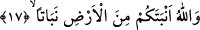
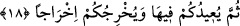

kaynaşabilecek bir vasfı yoktur ki ay ile güneşten sızan şeye ziya densin. Bu nedenle
Allah Teâlâ kandile benzetilen güneşi değil de ayı nur ismiyle isimlendirmiştir. Çünkü
nur hiçbir cihetin bulunmadığı mübârek ağaçtan yükselmektedir. O ise, bütün isimleri ve
sıfatları toplayan Hazret’tir.
17. Allah, sizi de yerden ot (bitirir) gibi bitirmiştir.
Yâni Allah sizi hayret verici bir bitirme ile ot gibi bitirmiş ve hayret uyandırıcı bir
biçimde yoktan var etmiştir. Bunu babanız Âdem’i topraktan yaratmak sûretiyle ya da
herkesi -topraktan biten bitkiden oluşan meniden yaratmak sûretiyle- yeryüzünden
yaratmıştır.
Burada meydana getirme hâdisesi istiâre sanatıyla “inbât” yâni bitirme fiili ile ifâde
olunmuştur. Çünkü o fiil insanın sonradan yaratıldığını ve topraktan meydana geldiğini
en iyi gösteren fiildir. Çünkü insanlar bitki olsalardı -kaçınılmaz olarak- bitkiler gibi
sonradan yaratılmış olacaklardır.
Âyette “inbad” yerine “nebat” kelimesi getirilmiştir. Çünkü bu kelime “enbetekum”
fiilini te’kid eden masdardır, zâit harfleri atılmıştır. Bu kelimeye ism-i masdar da
denilir. İsm-i masdar olduğunu daha sonra gelen kelime göstermektedir, o da
“yuhricukum ihracen” ifâdesidir.
Bâzı âlimlere göre “nebaten” kelimesi masdar değil hâldir.
Âyet-i kerîmede böylece insanın bir yönden (başlangıcının ve oluşumunun topraktan
olması, bitkinin gelişmesi gibi gelişmiş olması yönünden) bitki olduğuna işâret
olunmaktadır. Her ne kadar insanın bitkiden fazla özellikleri bulunsa da bu yönleriyle
ona benzemektedir.
Arapçada “nebat” demek, ister ağaç gibi gövdeli ister gövdesiz olsun yerden çıkan
şey demektir. Fakat halkın örfünde bitki, yerden çıkan ve gövdesi olmayana denir.
Dahası bütün halkın katında bitki, hayvanların yediği şeye denir.
Mârifet ehli olanlardan birisi der ki: “Allah sizi yerden bir ot bitirir gibi bitirmiştir”
âyet-i kerîmesinin mânâsı; vücûdunuzun gelişmesine yarayan gıdâlarınızı yeryüzünden
çıkarmıştır demektir. Tıpkı bitkilerin toprak vâsıtasıyla su ile geliştikleri gibi... Şu
hâlde bu varlığın gıdâsı ve gelişmesi, yaratılmış olduğu nesneden olmaktadır.
18. Sonra sizi yine oraya döndürecek ve sizi yeniden çıkaracaktır.
“Sonra sizi” öldüğünüzde içine defnedilmek sûretiyle “yine oraya döndürecek ve”